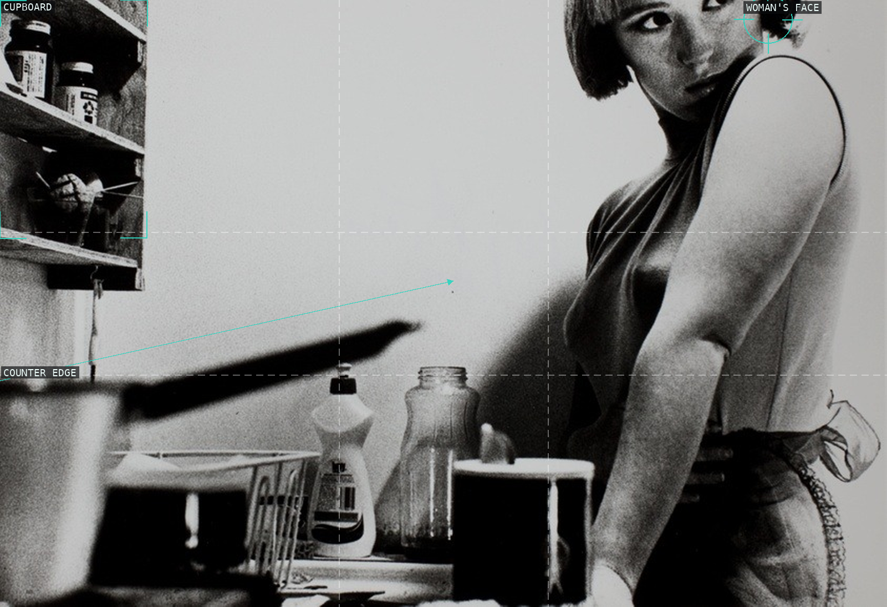
A cropped face and hard counter edge turn a domestic kitchen into a tense, off-balance scene.
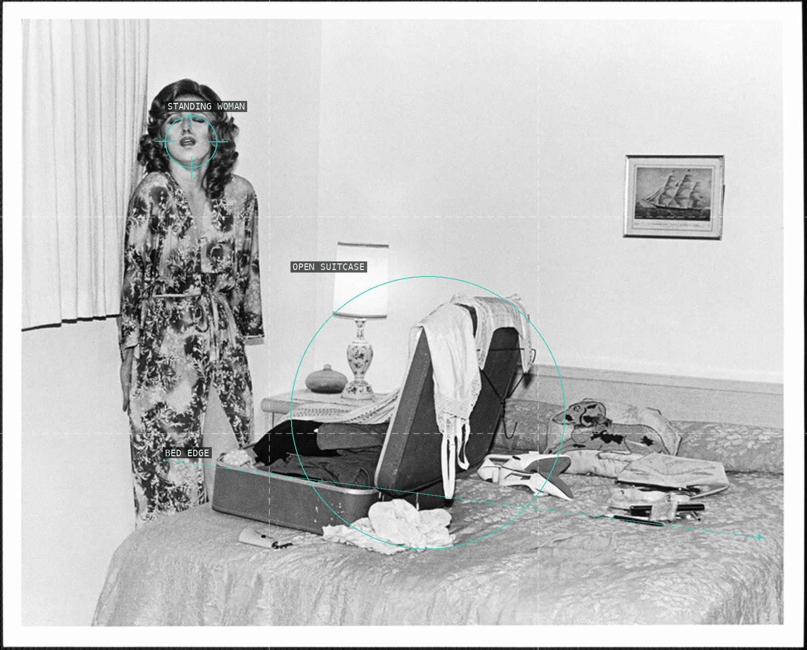
The standing figure, open suitcase, and bed make a small bedroom read as a stage of departure.
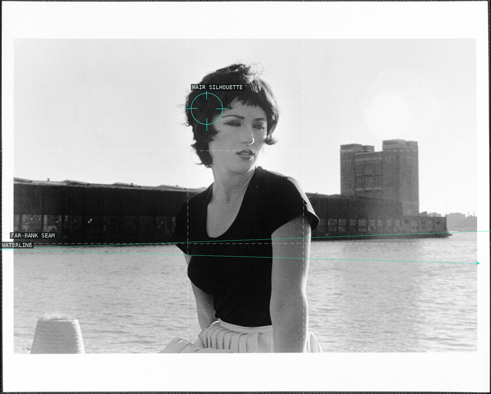
A turned portrait interrupts the long horizontal water bands and distant industrial blocks.
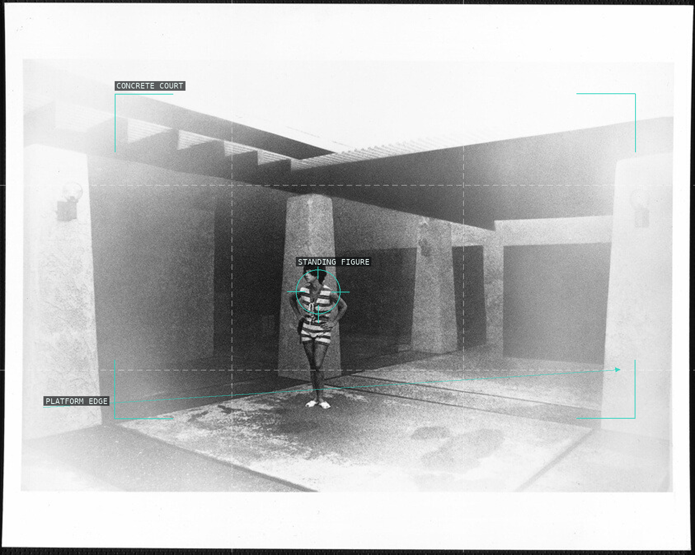
A small figure is isolated by a raised platform and the receding roof beam of a concrete court.
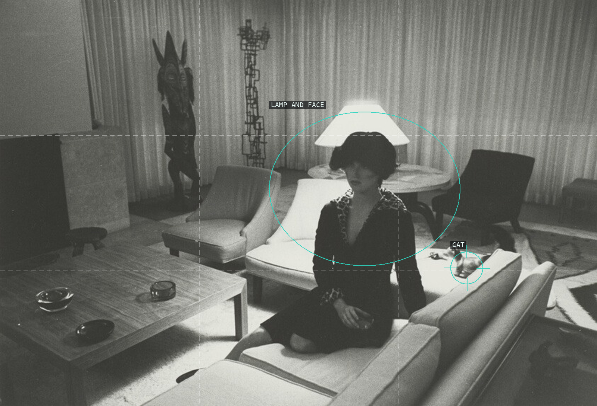
A bright lamp crowns the seated figure while chairs and table edges turn the room into a shallow set.
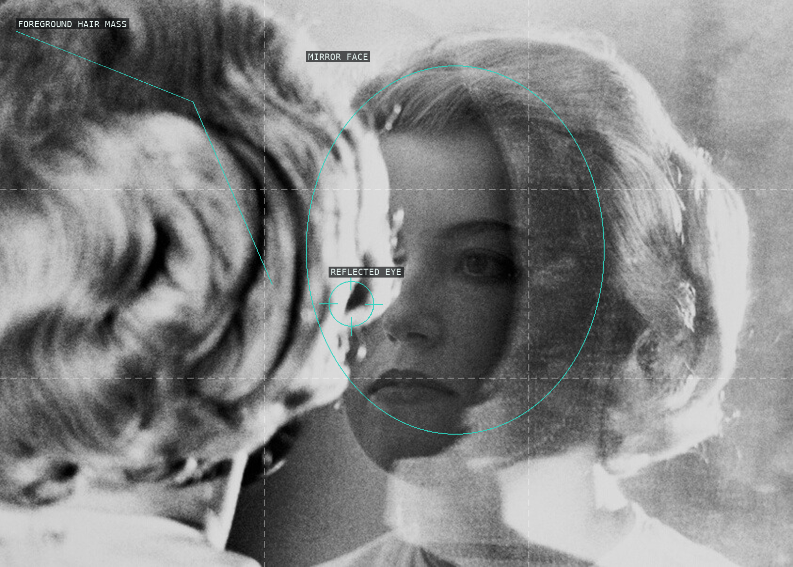
Foreground hair blocks the mirror, leaving only a partial face to make identity visibly constructed.
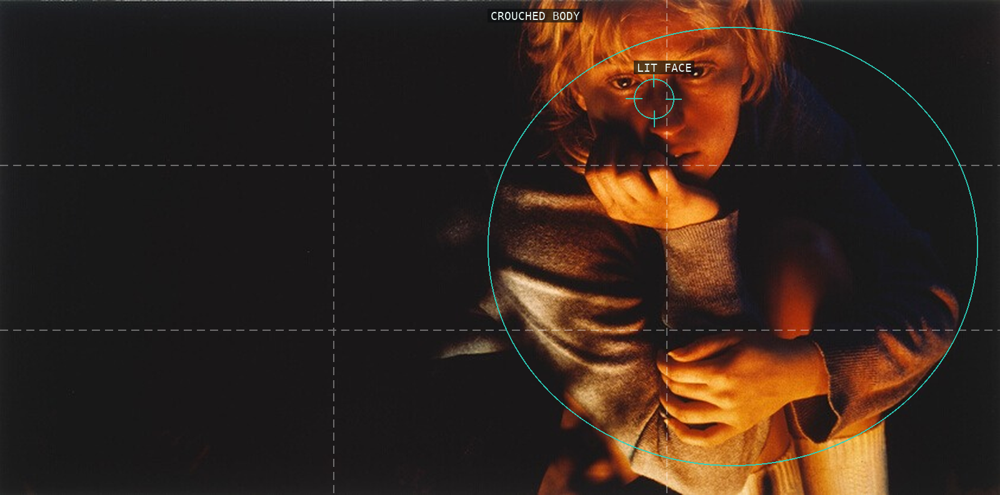
A small warm figure is isolated against a large field of black, making its pose and face disproportionately charged.
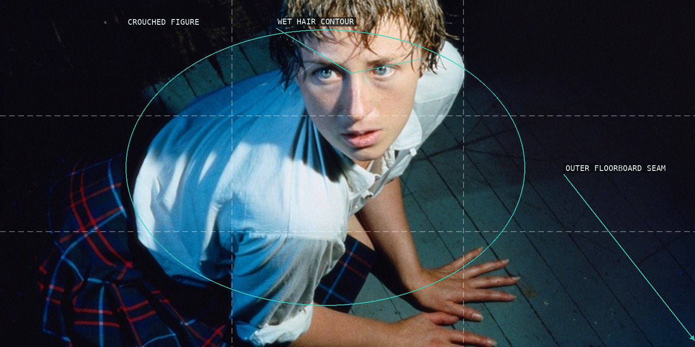
The steep viewpoint locks the figure to the floorboard grid while the direct gaze rises against it.
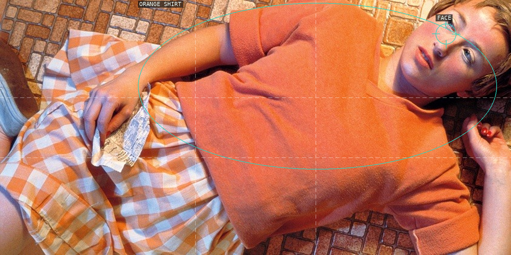
The orange shirt forms a broad field beneath the face, set against tile, newsprint, and checked fabric.

An exposed face and body run diagonally through gravel, with the surrounding texture becoming active ground.
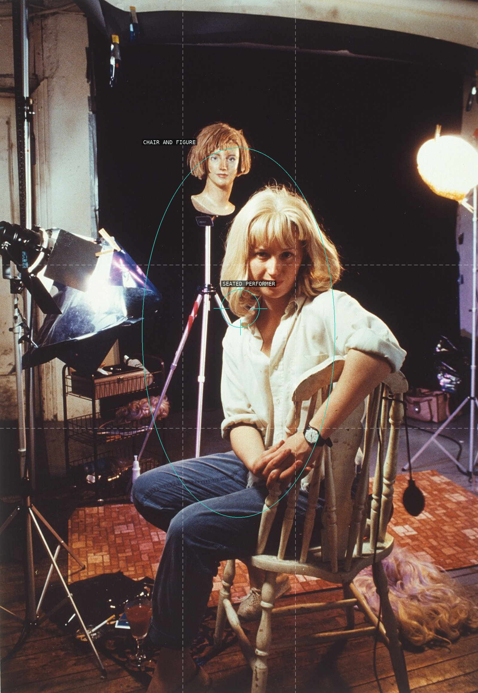
The performer sits before a literal studio field, while lights, stand, and mannequin expose the construction.
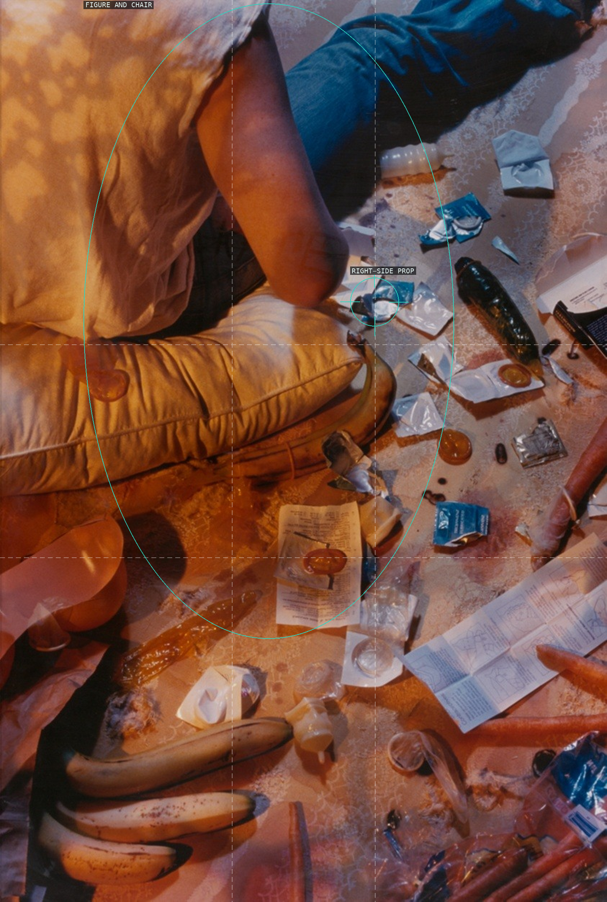
A back-turned figure occupies one side of a tall frame while scattered props turn the floor into evidence.